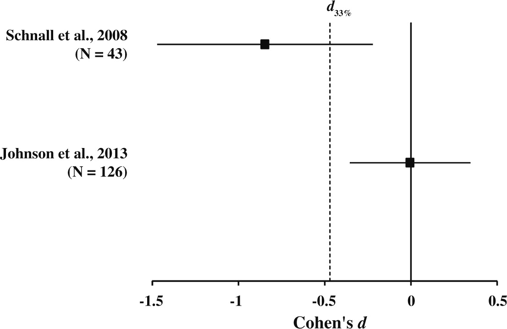

Etapy procesu badawczego w psychologii
Małgorzata Basińska
Etapy procesu badawczego w psychologii
Kontekst

Etapy

Nasz przykładowy eksperyment
Hipotezy
Praca naukowa jako weryfikacja hipotez
- Istotą pracy naukowej jest weryfikacja hipotez postawionych na podstawie teorii.
- Hipotezy muszą opierać się na dobrze zdefiniowanych pojęciach i podlegać empirycznej weryfikacji.
- Zaprzeczenie hipotezy również powinno być możliwe do zaobserwowania.
- Z góry powinniśmy wiedzieć, kiedy hipotezę przyjmiemy, a kiedy odrzucimy.
Dobra hipoteza
- falsyfikowalna
- uzasadniona i logiczna (wynikająca logicznie z dostępnej wiedzy)
- pozytywna (tzn. mówiąca o związku a nie jego braku)
Na podstawie: Research Methods in Psychology by Rajiv S. Jhangiani, I-Chant A. Chiang, Carrie Cuttler, & Dana C. Leighton link
Stawianie hipotez
- Hipoteza badawcza - konkretna, falsyfikowalna predykcja na temat związku pomiędzy dwiema lub więcej zmiennymi
- Związek postulowany przez hipotezę nie zawsze będzie związkiem przyczynowym!
- Najprostsze hipotezy łączą dwie zmienne, ale zmiennych może być więcej
Hipotezy kierunkowe
- Hipoteza zakłada związek pomiędzy zmiennymi, może mówić również o kierunku tego związku…
- …i wtedy jest to hipoteza kierunkowa
Przykłady hipotez badawczych
- Wystąpienie stresującego zdarzenia o charakterze interpersonalnym wiąże się z podwyższonym ryzykiem podjęcia próby samobójczej tego samego lub kolejnego dnia
- Wysoki poziom lęku wiąże się z krótszym zwlekaniem z podjęciem leczenia onkologicznego
- Słuchanie muzyki zmniejsza natężenie odczuwanego bólu
- Słuchanie muzyki zwiększa natężenie odczuwanego bólu
Kiedy będziemy zmuszeni odrzucić naszą hipotezę
- Musimy wiedzieć to zanim rozpoczniemy badania i uzyskamy wyniki
- Pomagają nam w tym metody statystyczne i przyjęte poziomy ufności
- Powody dla których badanie “nie wychodzi” - jakie?
Replikacja - próbujemy powtórzyć wcześniejsze badanie

Johnson, D.J., Cheung, F. and Donnellan, M.B. (2014). Does Cleanliness Influence Moral Judgments? Social Psychology, 45(3), 209-215. link Fair use.
Powody, dla których nie obserwujemy spodziewanego efektu
- efektu nie ma (a przynajmniej nie ma go w tej konkretnej sytuacji)
- efekt jest, ale niewielki - okazałby się istotny statystycznie na większej grupie, ale uwaga: co mówi nam o świecie niewielki efekt?
- coś źle robimy - warsztat badacza
- robimy coś inaczej, niż autorzy, którzy zaobserwowali wcześniej interesujący nas efekt tu przykład (na początku)
- próbujemy zreplikować zdawkowo opisane badanie lub korzystamy z metody, która była nieprecyzyjnie opisana (czyli robimy coś nie tak, ale nie wiemy co, bo autor nie podzielił się tym z nami)
Systematyczny przegląd i metaanaliza
Właśnie te dwa rodzaje artykułów naukowych pozwalają nam mierzyć się ze wspomnianymi problemami.
Etapy
Czy tak łatwo określić granicę odrzucenia hipotezy
Zmienne i definicje
Definicje w badaniach
- Weryfikacja hipotez nie jest możliwa bez definicji obserwowanych zjawisk.
- Nie wszystkie pojęcia (zmienne konceptualne) można wprost badać empirycznie.
- Przykłady - inteligencja, osobowość, poczucie kontroli.
- Jak zdefiniowalibyście konformizm?
Definicja konformizmu w eksperymencie Ascha
Naszym bezpośrednim celem było zbadanie społecznych i osobowych uwarunkowań, które skłaniają jednostki do oparcia się lub poddania presji grupy, podczas gdy jest ona postrzegana jako niezgodna z faktami.
Our immediate object was to study the social and personal conditions that induce individuals to resist or to yield to group pressures when the latter are perceived to be contrary to fact.
Asch, S.E. (1951). Effects of group pressure on the modification and distortion of judgments. In H. Guetzkow (Ed.), Groups, leadership and men (177–190). Pittsburgh, PA:Carnegie Press. link
Operacjonalizacja
- By nadać sens empiryczny pojęciom, którymi się posługujemy, stosujemy tzw. definicje operacyjne.
- Operacjonalizacja to definiowanie zmiennej przez pryzmat obiektywnych, empirycznych wskaźników.
- Np. inteligencję można zdefiniować operacyjnie odwołując się do narzędzi służących do jej badania (wynik testu na inteligencję) (Shaughnessy, Zechmeister, & Zechmeister, 2002).
- Jaka była definicja operacyjna oparcia lub poddania się presji grupy w eksperymencie Ascha?
Definicja operacyjna w eksperymencie Ascha
Zastosowaliśmy procedurę umieszczania osoby w sytuacji radykalnego konfliktu ze wszystkimi pozostałymi członkami grupy, mierzenia wywieranego przez tę sytuację efektu w terminach ilościowych i opisywania psychologicznych konsekwencji tej sytuacji. Grupa ośmiu osób została poinstruowana, by ocenić serię prostych, jasno określonych relacji percepcyjnych (…).
Każdy członek grupy wygłaszał swoje oceny publicznie. W środku tego monotonnego “testu” jedna osoba nagle znajdowała się w sytuacji sprzeczności wobec całej grupy i ta sprzeczność była powtarzana ponownie i ponownie w trakcie eksperymentu. Omawiana grupa, z wyłączeniem jednego jej członka, spotkała się wcześniej z eksperymentatorem i otrzymała instrukcje, by w pewnych momentach odpowiadać dokonując błędnych - i jednogłośnych - ocen.
[…] Zastosowana technika pozwoliła uzyskać prostą ilościową miarę “efektu większości” w terminach częstości błędów o kierunku odpowiadającym zniekształconym ocenom większości.
Asch, S.E. (1951). Effects of group pressure on the modification and distortion of judgments. In H. Guetzkow (Ed.), Groups, leadership and men (177–190). Pittsburgh, PA:Carnegie Press. link Własny przekład
Przykład: operacjonalizacja depresji
- wynik w teście depresji (papier-ołówek, ocena stwierdzeń na skali), np. wynik w Skali Depresji Becka
- liczba symptomów (objawów) depresji
- diagnoza depresji w przeszłości
Za: Research Methods in Psychology by Rajiv S. Jhangiani, I-Chant A. Chiang, Carrie Cuttler, & Dana C. Leighton link
Praktyczna uwaga
- operacjonalizujcie zmienne w uznany w danej dziedzinie sposób!!!!!!!!!
- robienie rzeczy po swojemu jest fajne i ciekawe, ale BARDZO dużo pracy wymaga robienie rzeczy po swojemu i jednocześnie dobrze - musicie przekonać innych, że rzeczywiście jest dobrze
- możecie narazić się na zarzut braku trafności zastosowanych narzędzi (o trafności zaraz)
Zmienne
- Zmienna - jakakolwiek własność lub cecha, która przyjmuje różne wartości u różnych ludzi, w różnych sytuacjach etc.
- Przykłady:
- Wiek
- Płeć
- Nastrój
- Agresywność
- Inteligencja
- Neurotyzm
Zmienne jakościowe i ilościowe
- przykłady zmiennych jakościowych (kategorialnych), czyli takich, które reprezentują pewną charakterystykę osób badanych i pozwalają przypisać ich do określonej grupy (kategorii):
- kierunek studiów
- zawód
- korzystanie z psychoterapii w przeszłości
- przykłady zmiennych ilościowych, czyli takich, które pozwalają każdej osobie przypisać pewną liczbową wartość tej zmiennej:
- wzrost
- wiek
- liczba rodzeństwa
Zmienne zależne i niezależne
- Zmienne niezależne to te, którymi badacz manipuluje lub które kontroluje w swoim badaniu.
- Zmienne, którymi manipulujemy w eksperymentach (warunki eksperymentalne / warunek kontrolny).
- Zmienne o charakterze różnic indywidualnych (naturalne zmienne grupowe).
- Zmienne zależne to te, w przypadku których weryfikujemy czy ich poziom jest różny, gdy różni się poziom zmiennej niezależnej. Jeżeli możemy sami manipulować zmienną niezależną sprawdzamy, czy podlegają zmianie, jeżeli to robimy.
Jak wygląda nasze badanie
Ile osób badanych?
- Decyzję o tym, ile osób zbadamy musimy podjąć przed rozpoczęciem badań.
- Inaczej ryzykujemy, że ktoś zarzuci nam, niekiedy słusznie, że badaliśmy aż zaobserwowaliśmy zgodny z hipotezą efekt.
Grupa kontrolna
- By zweryfikować jakąkolwiek hipotezę, potrzebujemy grupy kontrolnej.
- Co moglibyśmy powiedzieć bez grupy kontrolnej i dlaczego niewiele
Narzędzia
- Powinny pozwalać nam zmierzyć to, co w istocie chcieliśmy zmierzyć (trafność)
- Powinny mierzyć to możliwie dokładnie (rzetelność)
Podstawowe rodzaje badań w psychologii
Prosty podział wg dwóch kryteriów
- Czy to my manipulujemy zmienną niezależną?
- Czy to my kontrolujemy dobór do grup?
Kontrolujemy zmienną niezależną, kontrolujemy dobór do grup
- Eksperyment “właściwy”, np. eksperyment Ascha
- Co się stanie, jeżeli źle dobierzemy osoby do grup i grupy wyjściowo będą się różnić?
Manipulujemy zmienną niezależną, nie kontrolujemy doboru do grup
- Quasi-eksperyment, np. badanie Langer i Rodin dotyczące wzbudzania odpowiedzialności
- Znajdujemy w świecie dwie naturalnie występujące grupy, które nie powinny różnic się pod względem badanej zmiennej, w podanym przykładzie osoby mieszkające w domu opieki na dwóch różnych piętrach
- Dokonujemy manipulacji eksperymentalnej i mierzymy jej efekty porównując te grupy
- Niebezpieczeństwo: osoby w obydwu grupach mogły różnić się jeszcze zanim podjęliśmy badania!
Nie manipulujemy zmienną niezależną, nie kontrolujemy doboru do grup
- porównanie grup, np. ryzyko podejmowane przez kobiety i mężczyzn podczas zmierzania na autobus
- badania korelacyjne, np. związek między różnymi cechami osobowości
- plany:
- badania poprzeczne
- sukcesywnych prób niezależnych
- badania podłużne
Gdy nie kontrolujemy doboru do grup
- Nie mamy wpływu na zmienne zakłócające związane z charakterystyką badanych i ich historią
- W efekcie nie możemy w pełni przypisać obserwowanego efektu zmieniającym się poziomom zmiennej niezależnej
Gdy nie manipulujemy sami zmienną niezależną
- Nie mamy żadnej gwarancji, że nie zaszły inne równie / bardziej istotne zmiany
- Nie możemy w związku z tym na podstawie naszego badania wnioskować o zależności przyczynowo-skutkowej między zmiennymi
Podsumowanie
W skrócie
- Teoriom w nauce towarzyszą paradygmaty, które określają, jakie problemy podejmowane są w danej dziedzinie i jak wyglądają badania, które na te problemy odpowiadają.
- Realizując badania empiryczne korzystamy z definicji operacyjnych zmiennych, do których odnoszą się nasze hipotezy.
- Lwią część pracy badawczej wykonujemy tak naprawdę, zanim rozpoczniemy badania.